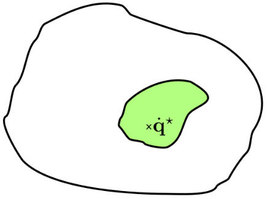

Last modified .
This can be formalised as a least squares problem - the aim is to minimise the difference between the task vector $v$ and the model that maps to the cartesian space: $$\begin{equation} \min_{\dot{q}} \quad \|v - J\dot{q}\|^2\\ \label{eq:formalAim} \end{equation}$$ $\min_{\dot{q}}$ means minimise $\dot{q}$.

This method is equivalent to finding 1 particular point within what could be, in general, a large subset of potential solutions.
With the homogeneous formulation, any point can be constructed within the green valid solution set for the diff IK problem.
The task is to move the tip of an end effector along a hexagon. This can be solved in many ways if the robot has more DOFs than the DOFs needed to specify the task. Here, the task has 3 DOFs and the robot has 7, so the null space $I - JJ^\dagger$ is 4 dimensional. The robot joints seem to bounce/dance in the null space.
These kind of motions can be chosen arbitrarily as long as they don't conflict with the primary task which is achieved with the null space projection.If the joint space does not have as many DOFs as needed to accomplish a task. E.g., consider a robot with only 4 joints trying to accomplish a 6 DOF cartesian task/twist.
In this case, it wouldn't be possible to minimise the cost function. The end solution would be the best that could be found in a least squares sense to the problem. It will accomplish as much as it can without actually solving the problem of executing the task perfectly.In the case of the humanoid, it might not be possible to achieve all of the tasks when there are multiple conflicting objectives. A hint at that is also the null space element. The null space will be done as well as possible as long as it doesn't conflict with anything that lives in the particular solution side of the equation.
More advanced IK solvers like track IK, will do many of these in parallel threads and then even a QP solution on top. Here, lots of local searches and random restarts are done to avoid the problem of local minimums.
All the diff IK discussed here is local.